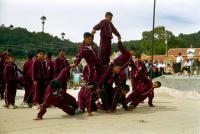
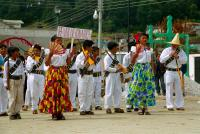
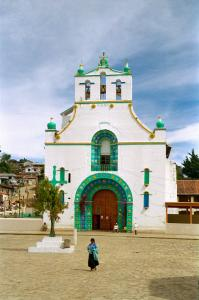
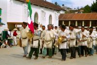
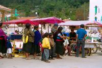
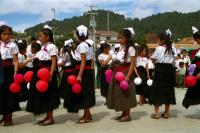
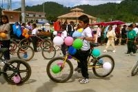

|
Mardi 20 novembre
On a lu que San Juan de Chamula pouvait décevoir quelquefois. D'abord parce
que ce village "indigène" comme ils disent ici, est très touristique. "Un touriste,
un ananas, un touriste, une orange". Et puis, l'accueil des indiens, les Tzotziles,
y est un peu froid paraît-il. Ils en ont marre d'être pris en photo, comme des
étrangetés par tous ces touristes dont beaucoup viennent en tour depuis San
Cristobal. Ca rappelle un peu l'ambiance tristounette de Tarabucco en Bolivie...
D'ailleurs, même à San Cristobal, on a pu un peu s'en rendre compte. Ce matin
au marché, juste avant de prendre le collectivos pour San Juan, la fille qui
nous a vendu les mandarines étaient d'accord pour qu'on prenne ses fruits en
photo, mais surtout pas elle. Et puis hier, alors qu'on prenait un lampadaire
en photo, une vieille indienne s'est mis une serviette sur la tête pour ne pas
être dessus. Elle était hors champ mais l'ignorait.
Nous arrivons à San Juan et, agréable surprise, il y a une fête. Normal, nous
sommes le 20 novembre, on fête la révolution mexicaine, c'est la fête nationale.
Très peu de touristes, restés aux festivités de San Cristobal sans doute, mais
en pleine saison, ce doit être impressionnant vu l'immense parking pour les
bus à l'entrée du village. Le défilé commence. C'est d'abord le tour des gamins.
Comme nous le précise la dame qui vend des boissons, ce sont les gamins du village,
ou plutôt ceux qui ont la chance d'aler à l'école. Chaque classe ou école défile
avec un thème différent. Il y a des haltérophiles, des petits mioches avec des
haltères en bois, en carton ou avec de vieilles boîtes de conserve. Puis viennent
les karatékas qui s'arrêtenmt et miment des combats ressemblant plus à des danses.
Ils sont amusnats comme tout. Ensuite le foot masculin et féminin, les sauts
de mouton, les sauteurs-périlleux. Les révolutionnaires aussi avec leurs fausses
moustaches et leurs carabines en bois. Au moment de la mise à feu, tous sont
alignés, couchés devant, à genoux et debout derrière. "Fuego!" crie l'un d'eux
tout en se débarassant vite fait d'un série de pétards qui, dans la hâte, atterri
presque sur les spectateurs. Après, viennent les vélos, les marathoniens, les
boxeurs, etc. C'est ensuite le tour des plus grands qui jouent un peu faux (surtout
les trompettes) dans l'orchestre de leur lycée. Ceux qui font les pyramides
humaines. Et les plus anciens pour finir avec eux aussi de faux fusils en bois
et leurs ponchos de laine. On prend plein de photos. Hé oui! Mais les gens ne
s'offusquent pas, eux-mêmes en font. Et puis ils sont fiers de leurs enfants,
comme cette dame très aimable qui nous explique qu'elle en a deux dans le défilé.
Un en vélo, l'autre en boxeur. On est assis là depuis un quart d'heure et on
sent que le courant passe bien, alors marion fait une distribution de ballons
gonflables. Ca amuse beaucoup les petites filles et ça amuse leurs mères.
On va ensuite prendre un verre et quelques tacos! Un gars un peu allumé nmous
demande si on peut lui payer une "copita", un petit verre qui contient un truc
ressemblant à de la limonade sans bulles. Tu parles! Ca fait au moins 90 degrés
son truc! Il nous fait la causette, nous explique qu'il y a plein de dialectes
ici, qu'on devrait apprendre le tzotzile... on verra plus tard, on a déjà oublié
comment dire "bonjour".
On le quitte pour aller viviter la superbe église du village, si on peut encore
appeler ça une église... L'intérieur est exceptionnel. S'il est vrai que le
bâtiment a une allure d'église, il y a bien longtemps qu'aucun prêtre n'y a
mis les pieds, chassés par les tzotziles. En fait, ils pratiquent leur religion
dans un cadre catholique. Les saints catholiques à l'intérieur amenés par les
missionnaires venus les évangéliser, sont toujours là mais représentent désormais
leurs propres divinités, la réincarnation de celles-là mêmes en qui ils croyaient
avant l'arrivée des missionnaires. On entre. Et on reste cloué sur place (comme
Jésus!)(mauvaise blague on sait). Il n'y a plus de bancs, ils les ont virés.
Ici, on s'assied par terre sur les longues épines de conifères jonchant le sol.
Ca sent bon. Entre nous et le choeur, de grandes tentures très larges sont tendues
dans la largeur, dessinant des "V" à l'envers.
Le long des murs latéraux, des saints, partout, à la suite les uns des autres,
peut-être 30 ou 40 statues. A leur cou sont accrochés les miroirs qui reflètent
les gens priant devant eux. C'est par leur propre bouche réfléchie dans le miroir
que le saint leur répond. Devant eux, les fidèles allument des bougies à même
le sol et s'assoient à côté pour prier jusqu'à leur extinction. Ce faisant,
ils boivent de l'alcool pour se purifier ou... du pepsi pour... roter! Car roter,
ça fait sortir le mal. Le choeur est encore plus fréquenté, peut-être y a-t-il
là San Juan, patron du village. On n'a pas été voir pour ne pas déranger. En
fait quand on entre dans cette église, ça fait tout drôle. D'abord cette absence
de bancs et d'autel, ces centaines de bougies brûlant par terre, des gens assis
ça et là en désordre sur les épines de conifères leur pepsi à la main, les sapins
(des vrais) et pour compléter l'ambiance les grandes tentures flottant dans
la fumée des bougies et le doux bruit des psalmodies chantonnées à voix basse
par les croyants. On a un peu l'impression d'entrer dans une crèche géante qui
serait installée dans une grotte.
On ressort. Le défilé est fini et le spectacle de danses sur l'estrade commence.
Danses traditionnelles, dont une qui raconte un graçon rejeté puis convoité
par deux filles. Les deux filles en train de se battre en musique font bien
marrer les gamins assis sur l'estrade. L'un d'eux nous empèche de prendre des
photos des danseurs, sauf si on paie un pesos. mais il le dit sur un ton si
peu sérieux qu'on finit par discuter un peu et par faire les présentations.
C'est complètement ravi qu'on rentre, serrés dans notre collectivos. Une super
journée, clôturée en fin d'après-midi par une conversation avec un représentant
en cafés du Chiapas fou de littérature mexicaine et française. Le soir, tacos
tout comme à midi, on va finir par se transformer en tortillas!
Suite du voyage : Zipolite
|

Mexique
San Juan de Chamula
|

Mexique
San Juan de Chamula
|

Mexique
San Juan de Chamula
|

Mexique
San Juan de Chamula
|

Mexique
San Juan de Chamula
|

Mexique
San Juan de Chamula
|

Mexique
San Juan de Chamula
|
|
|